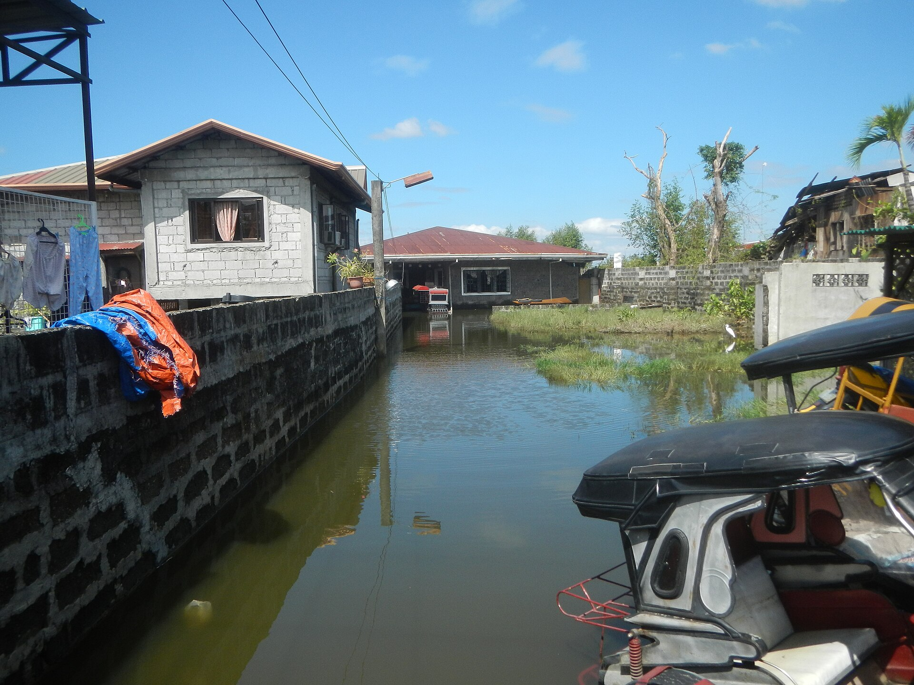

When the tide comes to your door.
Behind the numbers are families who plan their day around the tide table.
A routine shaped by water
The examples below come from a December 2025 feature in The Philippine Star about San Agustin, the most populous barangay in Hagonoy.
- Homes. Floods in mid-2025 reportedly reached about 4.9 feet in one home, leaving the ground floor unusable.
- Getting around. A tricycle driver said fares range from ₱30 to ₱80 depending on the tide, and that he used to wait for water to go down before leaving.
- Small businesses. A feed and egg store was flooded twice, damaging stock and forcing the owner to borrow again.
- Traditions and savings. Residents described losing furniture bought with retirement pay and cutting back on yearly traditions.

Everyone, but not equally
Households
Repeated cleaning, repairs and raising floors cost money, and some families cannot afford to move.
Livelihoods
Store owners, drivers, fish farmers and vendors lose working days and stock to tide and flood.
Older people & children
Wading through floodwater and climbing stairs are harder and riskier for them. Floodwater can carry germs and waste.
The last card is general public-health guidance, not a finding from a Hagonoy survey.
What the barangay carries
Budget pressure
San Agustin's barangay captain said about 10% of the annual budget goes to calamity needs, spread over 4,759 households. He called for lasting solutions, such as the long-discussed megadike or coastal road, rather than "band-aid" fixes.
Unfinished works
The same report says a ₱77 million flood mitigation structure in San Agustin, contracted in 2023, was still not complete, citing Sumbong sa Pangulo data. Public updates on project status help residents hold works to account.